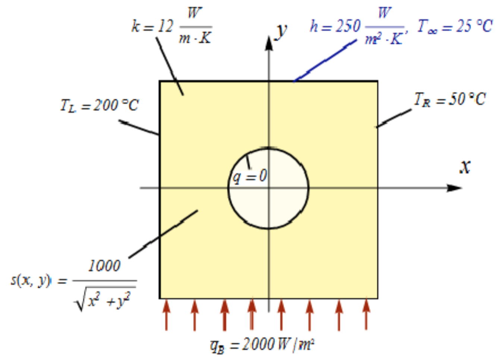

2.3. Diffusive Heat Transfer¶
2.3.1. Objectives¶
This example demonstrates the use of the HeatTransfer2DModel to solve a diffusive heat transfer problem.
2.3.2. Problem description¶
Consider the heat transfer problem for a plate with a hole. The plate thickness is 1, and the material is isotropic with a constant thermal conductivity \(k\). There is a distributed heat generation \(s(x,y)\) acting throughout the plate. The surface of the hole is insulated, there is a prescribed temperature at the left and right faces, a prescribed heat flux into the plate at the bottom face, and a convection boundary condition at the top face.
{kind=link}
2.3.3. Model script¶
The problem is defined and solved in pyfem2 as follows:
"""
pyfem2 tutorial demo program: Diffusive heat transfer.
"""
from numpy import *
from pyfem2 import *
# Create the model problem and read the mesh from a file
V = HeatTransfer2DModel()
V.Mesh(filename='PlateWithHoleTria3Fine.g')
# Define an element block of diffusive heat transfer elements
# with material 'Material-1'
V.ElementBlock('Block1', ALL)
# Create a material and define the thermal conductivity
V.Material('Material-1')
V.materials['Material-1'].IsotropicThermalConductivity(12)
V.AssignProperties('ElementBlock1', DiffussiveHeatTransfer2D3, 'Material-1')
# Fix temperatures on left and right edge
V.PrescribedBC(ILO, T, 200)
V.PrescribedBC(IHI, T, 50)
# Define surface flux on bottom edge of domain
V.SurfaceFlux(JLO, 2000)
# Define surface convection on top edge of domain
Too, h = 25, 250
V.SurfaceConvection(JHI, Too, h)
# Define a function specifying the heat generation
def fun(x):
return 1000. / sqrt(x[:,0] ** 2 + x[:,1] ** 2)
V.HeatGeneration(ALL, fun)
# Solve for the unknown degrees of freedom
V.Solve()
# Write the results to the ExodusII output database
V.WriteResults('heat1.exo')
2.3.4. How does it work?¶
The complete code can be found in the files pyfem2/tutorials/Heat1.py. We now examine the preceding program in detail.
The first lines of the program,
from numpy import *
from pyfem2 import *
import objects from the numpy and pyfem2 namespaces in to the program.
numpy is a python package providing numerical data
types and procedures. The key imports from the pyfem2 library is
the HeatTransfer2DModel.
The statement
V = HeatTransfer2DModel()
creates the finite element model. The finite element mesh is assigned to the problem by
V.Mesh(filename='PlateWithHoleTria3Fine.g')
which reads the mesh definition from a ExodusII formatted file. The mesh is composed of 1885 triangular elements

The finite element model V requires that every element in the mesh be
assigned an element type and material constitutive relations. The assignment
occurs by grouping elements of the same type together in to element blocks and
then assigning to those element blocks material and fabrication properties.
For this problem, every element in the mesh is a DiffussiveHeatTransfer2D3
two-dimensional diffusive heat transfer element. The element block, named
ElementBlock1, containing all of the elements in the mesh is created by:
V.ElementBlock('ElementBlock1', ALL)
The symbol ALL informs the ElementBlock method to assign all elements
in the mesh to the block ElementBlock1. Material properties are defined by
the Material method and elements in a block are assigned material and
fabrication properties by the AssignProperties method:
V.Material('Material-1')
V.materials['Material-1'].IsotropicThermalConductivity(12)
V.AssignProperties('Block1', DiffussiveHeatTransfer2D3, 'Material-1')
The method AssignProperties takes as input the name of the element block
to which properties are being assigned, the element type for elements in the
block, the material model name, and any element fabrication properties. For
DiffussiveHeatTransfer2D3 elements, no fabrication properties are required.
The next step is to specify the boundary conditions \(T(x=-1,y)=200\) and \(T(x=1,y)=50\):
V.PrescribedBC(ILO, T, 200)
V.PrescribedBC(IHI, T, 50)
The symbols ILO and IHI correspond to the \(x\) coordinate
direction (I) and the identifiers LO and HI to the corresponding
low and high boundaries.
The surface flux on the bottom of the domain is defined by
V.SurfaceFlux(JLO, 2000)
and the surface convection on top edge by
Too, h = 25, 250
V.SurfaceConvection(JHI, Too, h)
The heat generation in the body of the domain is given by \(1000/\sqrt{x^2+y^2}\) and is assigned to the model by defining a corresponding function and passing it to the HeatGeneration method:
def fun(x):
return 1000. / sqrt(x[:,0] ** 2 + x[:,1] ** 2)
V.HeatGeneration(ALL, fun)
Finally, the unknown temperatures are determined by solving the model and the model results are written to an ExodusII output file
V.Solve()
Perhaps the easiest way to view results is by:
V.Plot2D(colorby=V.T)
where V.T is the temperature determined from the call to V.Solve(). The result is

The results can also be written to an ExodusII file and viewed in ParaView
V.WriteResults('heat1.exo')